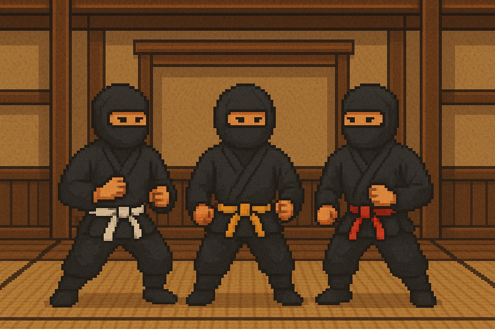

道場
Welcome to Java Abstraction and Generics Kata Dojo
Master the art of Java abstraction and generics through progressive training exercises. Each kata builds upon the previous, guiding you from basic concepts to advanced patterns.
Your Journey: Start with fundamental abstraction principles, progress through interface design and polymorphism, then advance to bounded generics, wildcards, and the PECS principle.
Each kata combines practical coding challenges with the wisdom of sensei-deshi dialogue, helping you understand not just how to use these concepts, but when and why to apply them.
"In abstraction, we find the essence of things, free from the burden of specific implementation."
